连载不要停
项目简介
沉浸式互动喜剧《连载不要停》创作于2025年12月-4月，于2026年4月-5月进行创排，作为常驻剧目预计在2026.6.6开始一轮演出。目前演出已经超过一百场，同类作品大麦排行稳定前五，现已在武汉设置分剧场10月开票演出。
剧场位于上海市虹口区滨港商业中心2楼草台嘻班剧场，演出时长约1.5h。本人系该剧目编剧。
海报：
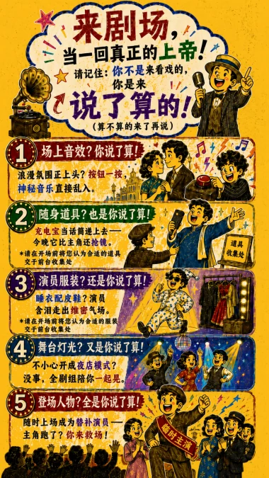
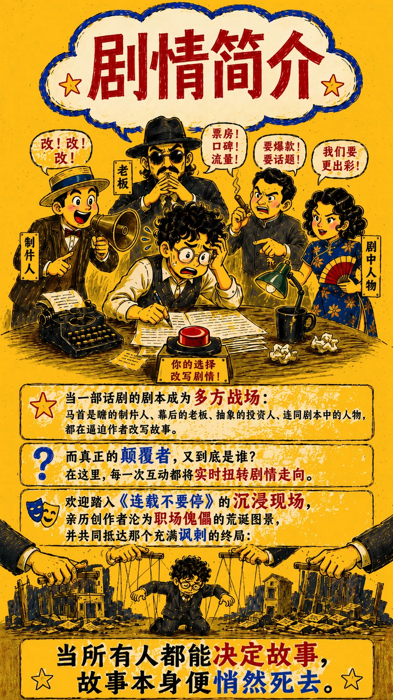
卡司剧照：
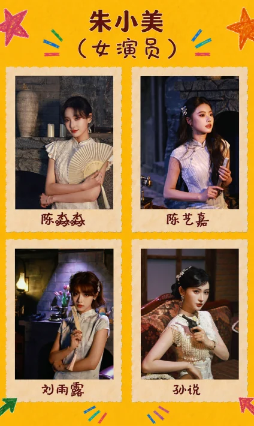
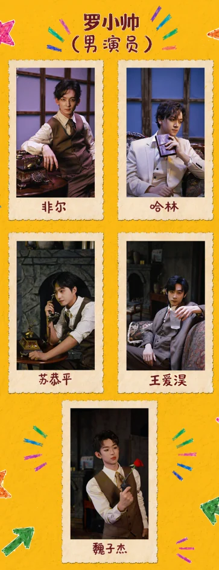
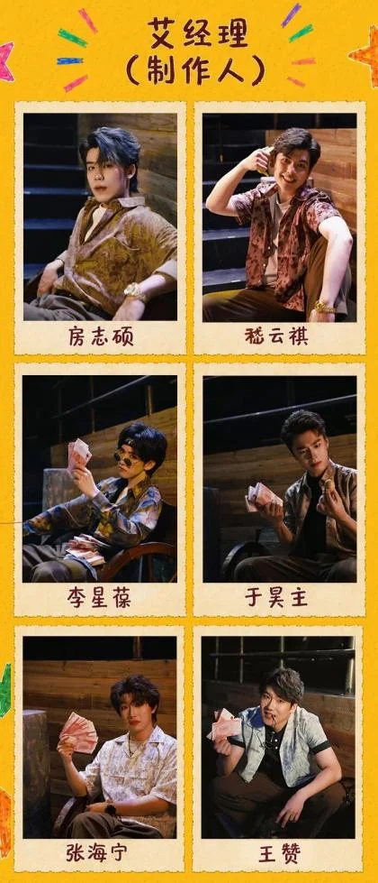
大麦评分9.9
上海同时期小剧场作品排名第二
观众评价：
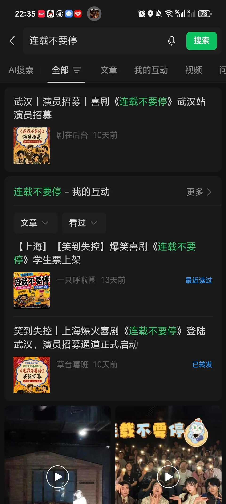
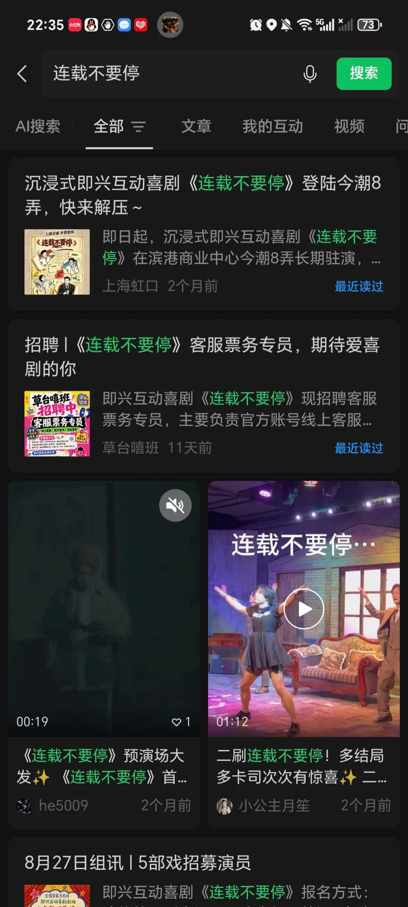
小红书评价：
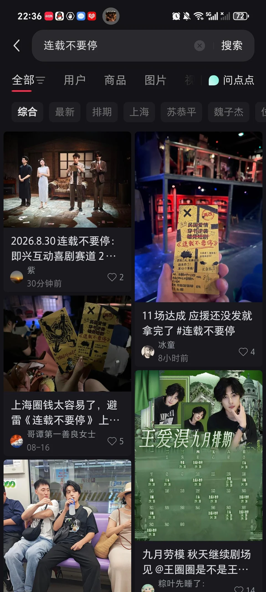
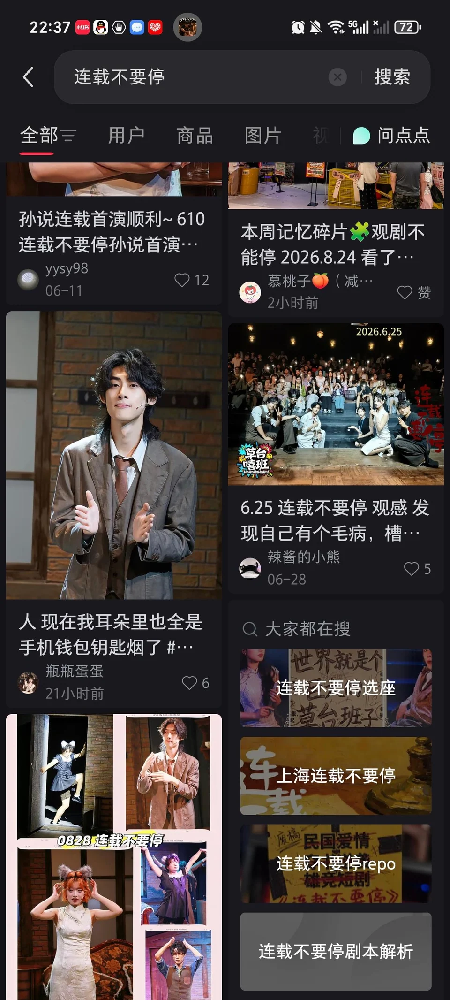
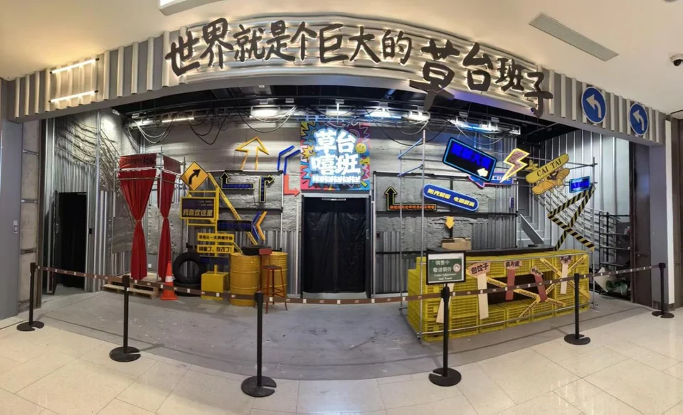
草台嘻班剧场位于上海市虹口区滨港商业中心2楼
建组照：
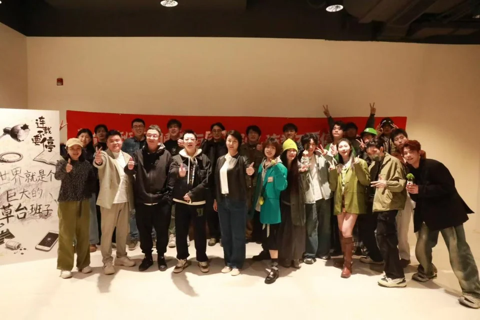
部分剧照：
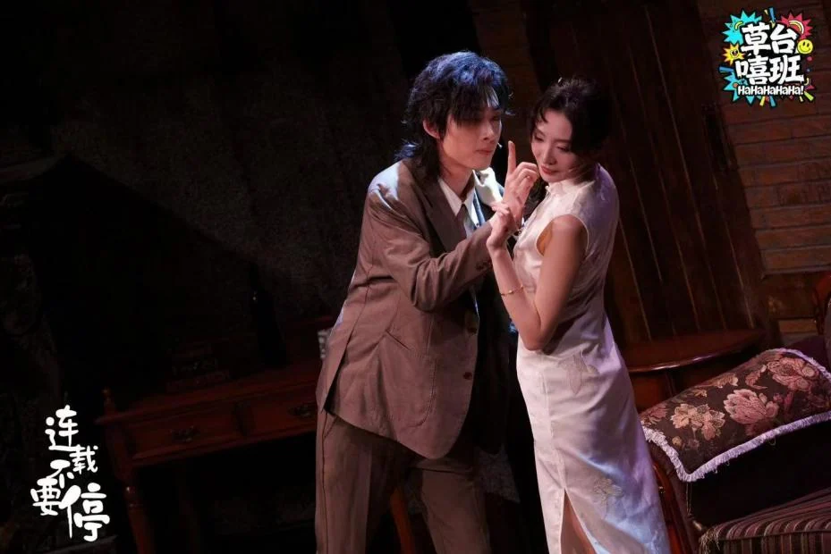
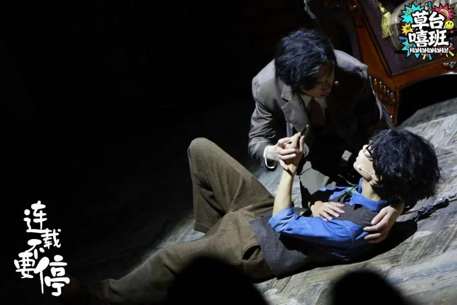
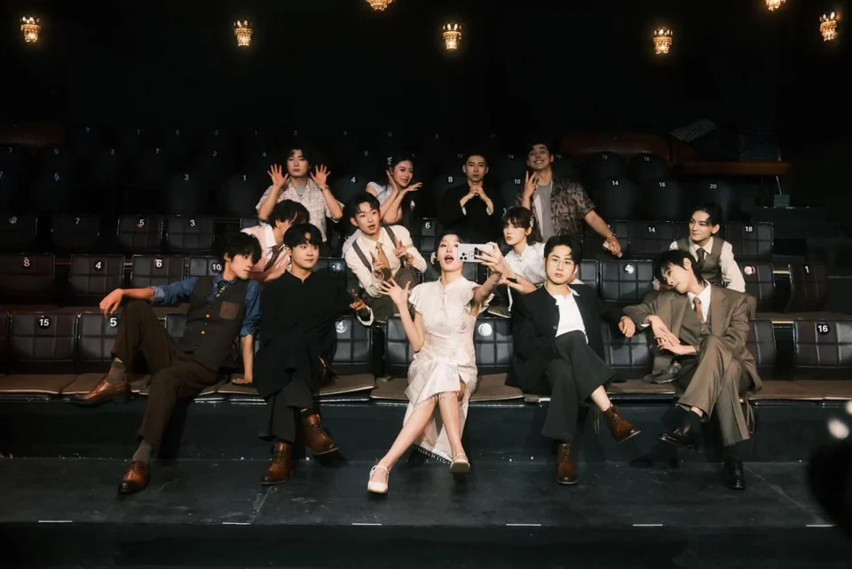
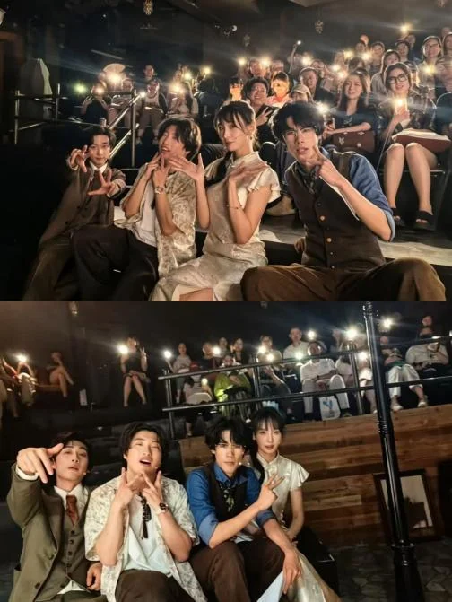
故事梗概
当山寨作家沈砚的连载成为多方战场:数据至上的经理、幕后的老板抽象的投资人，连同他笔下的人物，都在逼迫他改写故事。而真正的颠覆者，到底是谁?在这里，每一次互动都将实时扭转剧情走向。
欢迎踏入连载不要停的沉浸现场，亲历创作者沦为职场傀儡的荒诞图景并共同抵达那个充满讽刺的终局:
当所有人都能决定故事，故事本身便悄然死去。
人物小传
沈砚/导演
戏⾥落魄的⺠国鸳鸯蝴蝶派作家，理想主义者却被⽣计裹挟，抄袭莎翁作品却嘴硬称致敬。被催稿、改稿的⽇⼦磨平棱⻆，最终在资本的⽆休⽌要求下，撕破体⾯承认现实，放下笔与荒诞的创作现状决裂。戏外是这个戏的导演和编剧（兼场记兼后厨），是“救⽕队⻓”，在剧团劳苦功也不算⾼，因主⻆跑路临时顶替上台，⼜被不停地要求改稿最终忍⽆可忍，在这个荒诞的爱情故事⾥彻底爆发。
罗⼩帅/男演员
戏⾥是沈砚笔下的⺠国少爷，深爱朱⼩美却常因爱伤⼈，从书中⾛出后执着改写圆满结局，哪怕沦为跟班也只想与爱⼈相守。戏外男演员对⼥演员情根深种，甚⾄太情根深种甚⾄表现出有些舔狗，不过本⼈并没有意识到事态的严重 。其实男演员家庭资产雄厚。震惊！！本戏的投资商竟然和男演员有着千丝万缕的关系！！
朱⼩美/⼥演员
戏⾥是从沈砚笔下温柔美丽的⺠国千⾦，身份会根据沈砚的⼼理有所转变。戏外⼥演员是⼀个百变戏痴，对于演艺事业有偏执的追求，梦想是追求表演的巅峰，经常会按照⾃⼰想法改戏，让导演头疼不已。 希望⾃⼰成为独⽴⼤⼥主，幻想⾃⼰成为创业⼥⽼板（某种意义上也是），勇敢追求⾃我与独⽴的⼈⽣，就是故事似乎有些⾛向底层市场。
艾经理/制作⼈
戏⾥是《微安晨报》经理，反复要求沈砚改稿从⽽向背后⽼板交差，戏外是草台戏班制作⼈，圆滑应变、擅⻓串场互动。他游⾛在体⾯与不堪之间，是剧团与资本之间的减震器。剧团突发状况不断，为了拯救剧团，只能厚着脸⽪向观众求援，还传达资本要求，为了剧团活下去不惜放下所有体⾯。
相关报道：
武汉剧院开票信息：https://mp.weixin.qq.com/s/IJRnpIRe6KCMcq3wLrrp6A
上海虹口报道：https://mp.weixin.qq.com/s/bIOje9ZGsyiXfaQ_nxnLOA
九派新闻报道：https://mp.weixin.qq.com/s/inzTla-Be9p885DUbdLHmA